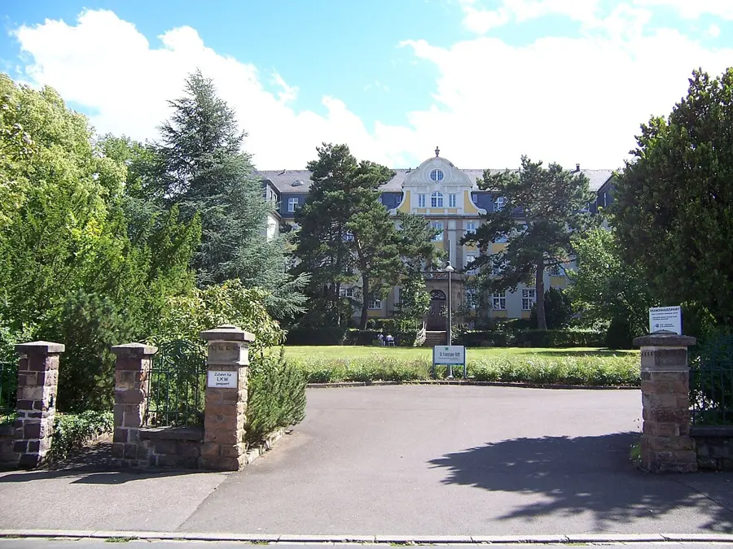

Start · Dein Ausgangspunkt
St. Franziska-Stift
Von hier aus geht es in ruhigen Etappen Richtung Altstadt — insgesamt rund 2 km, jederzeit abkürzbar.
Das Haus wurde 1909/1910 gegründet und ist nach Franziska Puricelli (1830–1896) benannt, einer Wohltäterin aus dem Hunsrück. Es begann als Frauenkrankenhaus; heute ist hier eine Fachklinik für psychosomatische Erkrankungen.
Dieser Guide ist ein Spaziergang ohne Zeitplan: Jede Station darf auch ausfallen, Bänke sind zum Benutzen da, und umdrehen ist immer erlaubt.
Praktisch: Plane mit Pausen etwa 3–4 Stunden ein. Wasser, eine leichte Jacke und bequeme Schuhe reichen. Die Wege sind überwiegend flach.
–:–
St. Franziska-Stift — hier startest du